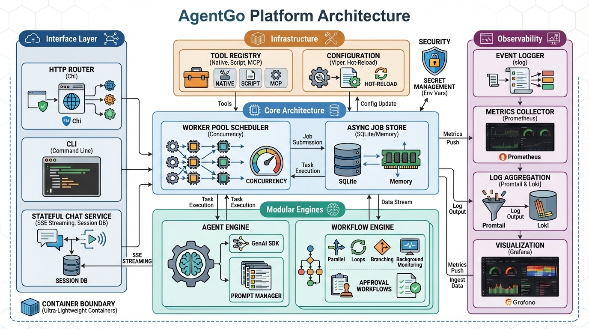

AI Agent Orchestration Platform
Define agents in YAML. Orchestrate workflows. Stream responses. Ship a single binary. AgentGo brings compiled-language performance to agentic AI.
Private repository — contact us for access
Why AgentGo?
Purpose-built to solve the real pain points of running AI agents in production
The Problem
Heavy Python Runtimes
Multi-GB Docker images, slow cold starts, GIL-limited concurrency. Every agent deployment becomes an infrastructure burden.
Poor Concurrency Models
Thread pools and async/await don't scale. Running 100+ concurrent agents means fighting your runtime, not building features.
No Built-in Observability
Bolting on monitoring after the fact. Custom metrics, tracing, and audit logging are afterthoughts in most frameworks.
Configuration Sprawl
Agent definitions scattered across code, environment variables, and deployment configs. No single source of truth.
The AgentGo Solution
Compiled Go Binary
~20MB statically-linked binary. Sub-second cold starts. No interpreter, no virtual environment, no dependency hell.
Goroutine Worker Pool
Native goroutine-based scheduler handles thousands of concurrent agents. Zero contention, built-in backpressure, graceful shutdown.
50+ Prometheus Metrics
Instrumented from day one. Pre-built Grafana dashboards, JSONL audit logs, structured logging, and cost tracking out of the box.
Single YAML Per Agent
One file defines the agent: model, tools, prompts, permissions, guardrails. Hot-reload on change. Pack system for distribution.
Platform Features
Everything you need to build, deploy, and operate AI agents at scale
Multi-LLM Providers
Gemini, OpenAI, Anthropic, and LiteLLM proxy. Switch providers per-agent via config. Streaming and function calling across all backends.
Flexible Agents
YAML-defined agents with prompt templates, tool bindings, and schema validation. Pack system for reusable agent bundles. Subagent delegation.
Workflow Engine
Sequential, parallel, and conditional execution. Dynamic supervisor pattern with event-driven orchestration. Visual diagram generation.
Durable Agents
Persistent, event-driven agent instances with SQLite checkpoints. Crash recovery, pause/resume, mailbox messaging, and approval workflows.
Chat & Streaming
Multi-turn chat sessions with SSE token streaming. Interactive REPL with tool display, delegation, and background task management.
Tool Ecosystem
Native Go tools, YAML-configured tools, shell scripts, HTTP endpoints, and MCP server integration. Skill-provided tools with schema validation and timeouts.
Scheduling & Triggers
Cron scheduling with SQLite persistence. Webhook triggers with HMAC validation. Timer-based and poll-based event sources for durable agents.
Observability
50+ Prometheus metrics with pre-built Grafana dashboards. Structured JSON logging, Loki integration, and JSONL audit trails for every tool call.
Security & Guardrails
API key authentication, filesystem and network permission sandboxing. Cost guardrails with per-agent budgets. Rate limiting and circuit breakers.
Skills System
Self-contained knowledge packages with trigger-based discovery. Skills bundle instructions, tools, and dependencies with SemVer compatibility. Supports remote MCP/HTTP sources and inter-skill dependencies.
Subagent Delegation
Spawn isolated child agents for parallel research, coding, or exploration. Type-defined subagents with their own tool sets and sandboxed execution contexts.
Architecture
A modular, layered architecture designed for extensibility and production reliability

Request → Router → Handler → Scheduler → Agent → GenAI ↓ ↓ WorkflowEngine ToolRegistry ↓ ↓ ChatService DelegationManager ↓ ↓ SSE Streaming CronScheduler ↓ DurableManager → Instance(s) → Orchestrator
Define Agents in YAML
No boilerplate code. One file defines your agent's model, behavior, tools, and constraints.
name: researcher description: Deep research agent with web access model: gemini-2.0-flash provider: gemini prompt_template: research.tmpl system_prompt: | You are a thorough research assistant. Always cite sources and verify claims. tools: - web_search - read_file - write_file parameters: temperature: 0.3 max_tokens: 8192 max_iterations: 15 permissions: filesystem: allowed_dirs: ["/data/research"] network: allowed_domains: ["*.google.com"]
Declarative Configuration
Every agent aspect is defined in YAML: model selection, prompt templates, tool bindings, iteration limits, and safety permissions. No Go code required to create new agents.
Hot Reload
Edit YAML, send SIGHUP. Agent configs reload without restarting the server. Zero-downtime updates to prompts, tools, and parameters.
Pack System
Bundle agents with their prompts, tools, and skills into distributable packs. Import community packs or create your own via manifest.yaml.
Built-in Guardrails
Filesystem sandboxing, network restrictions, cost budgets, and iteration limits are first-class config. Security is declarative, not an afterthought.
LLM Providers
First-class support for major LLM providers with a unified interface
Token Streaming
Real-time SSE streaming across all providers. Consistent callback interface regardless of backend.
Function Calling
Unified tool/function schema. Provider-specific adaptors handle format differences transparently.
Provider Failover
RetryLLMCall with exponential backoff. Switch providers per-agent without code changes.
Performance & Deployment
Compiled for speed, packaged for simplicity
Docker
Minimal Alpine-based image. Single container, production-ready.
Compose Stack
Full observability stack: AgentGo + Prometheus + Grafana + Loki.
Single Binary
Download and run. Embedded configs and resources. No install step.
Hot Reload
SIGHUP reloads agent and workflow configs. Zero-downtime updates.
Get Started
From zero to running agents in three steps
Clone & Build
# Request access first git clone <repo-url> make build
Configure
export GEMINI_API_KEY=your-key # Edit configs/agents/*.yaml
Run
./agentgo serve # Or: make docker-run
Private repository — contact us for access